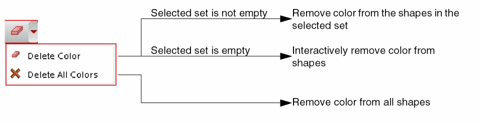
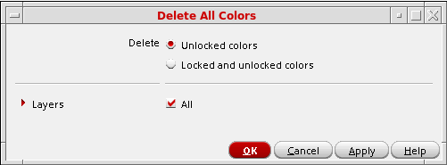

Removing Color from Shapes
To remove color from shapes in the layout:
- Click the Delete Colors icon on the Multiple Patterning toolbar.
-
Choose one of the following from the drop-down list:
-
Delete Color
- If the selected set is not empty, removes the locked and unlocked colors from the shapes in the selected set, including HCL-colored shapes in the selected instances.
-
If there are no shapes selected in the layout, the remove color cursor (arrow with three dots) appears when the layout window is active. The status banner Cmd field at the bottom-right corner of the window shows Delete Color. Click shapes in the current editing hierarchy level to remove their color.
-
Delete All Colors
The Delete All Colors form appears.
-
Delete Color
- Choose one of the following:
- Choose the layers for color removal.
-
Click OK or Apply.
The colors are removed from shapes as specified by the Delete All Colors form selections.
The Delete Color and Delete All Colors commands apply to Pcells also. This enables you to delete colors on specific Pcells.
Return to top